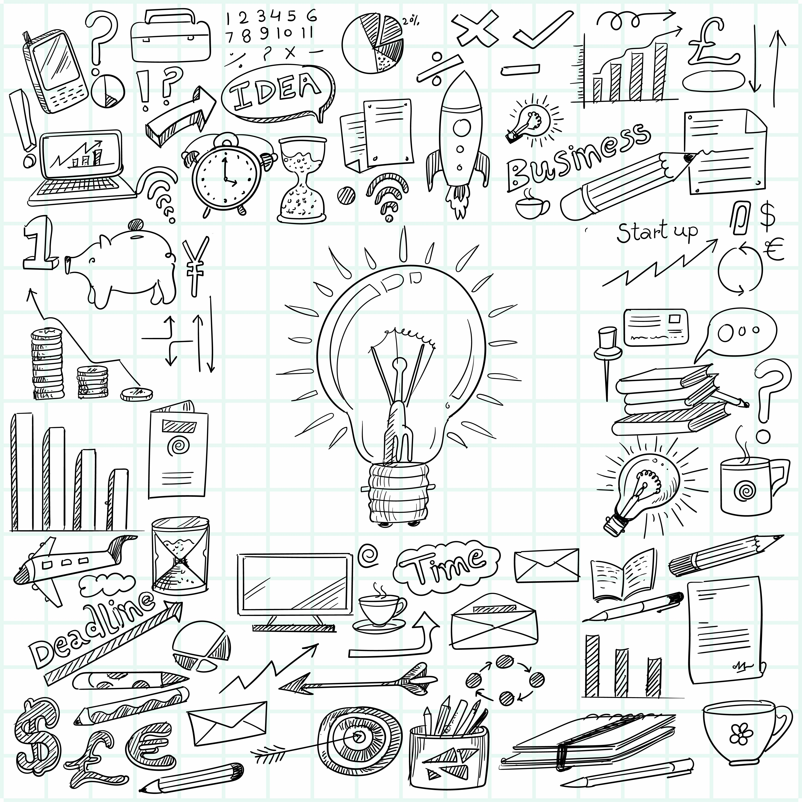
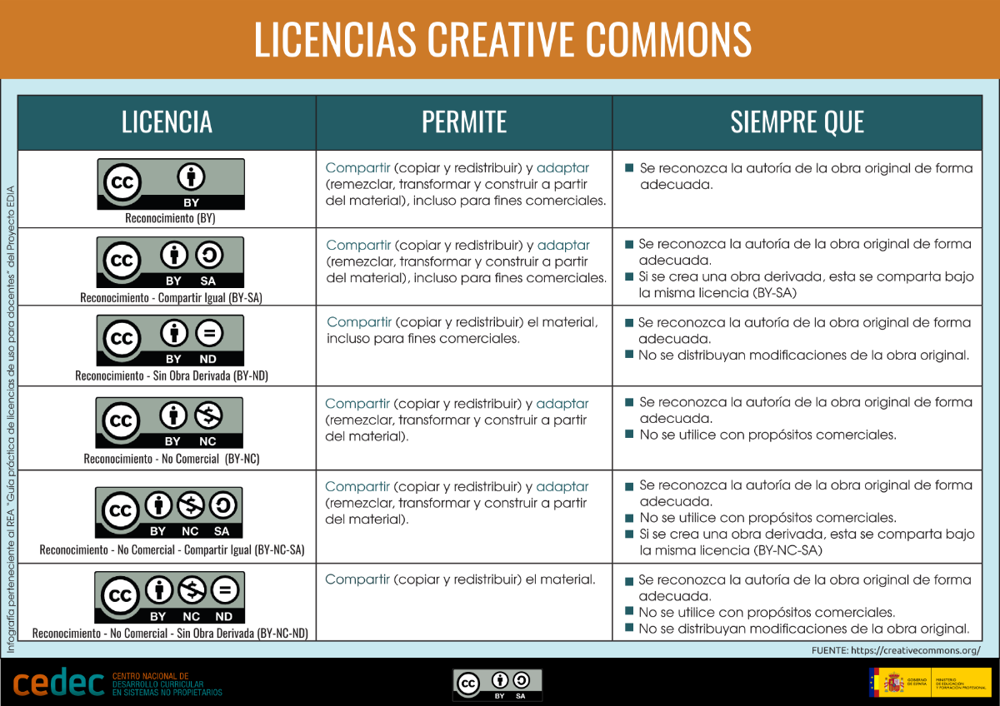
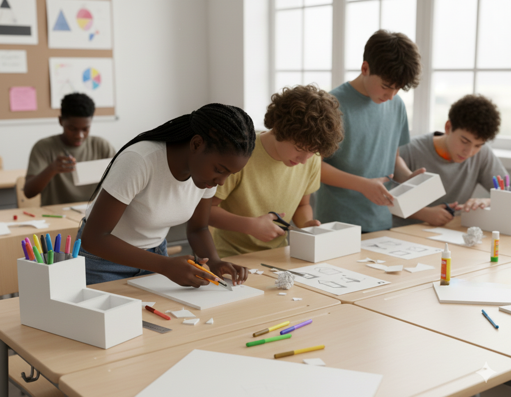

Proyecto lapicero
1. Portada
2. Introducción
¿Qué voy hacer?
En esta situación de aprendizaje vas a diseñar y construir un lapicero siguiendo el proceso tecnológico. A lo largo del trabajo aprenderás a analizar un problema, proponer soluciones, planificar un proceso de fabricación y evaluar el resultado final.
No se trata solo de “hacer un objeto”, sino de pensar cómo se diseña, cómo se toman decisiones y cómo se trabaja de forma organizada, utilizando herramientas digitales para documentar el proceso.
El trabajo se realizará en varias fases y combinará tareas prácticas, trabajo en equipo y el uso responsable de recursos digitales. Al final, presentarás tu lapicero junto con la documentación que justifica las decisiones tomadas durante el proyecto.
3. Situación de aprendizaje
<br>

En el aula surge la necesidad de mantener el material de trabajo ordenado y accesible. A partir de esta situación cotidiana, se plantea el reto de diseñar y construir un lapicero funcional, estable y adaptado a su uso diario.
Para resolver este reto, el alumnado deberá analizar el problema, proponer distintas soluciones, seleccionar la más adecuada y planificar su construcción, teniendo en cuenta aspectos como las medidas, los materiales, el coste y el impacto del diseño.
Durante el proceso se utilizarán herramientas digitales para documentar el trabajo, realizar bocetos y elaborar un diseño en tres dimensiones, fomentando la organización, la reflexión y la mejora progresiva del producto final.
4. Tareas
Texto
4.1 Documentación del proceso tecnológico
Documentación del diseño del lapicero

Objetivo: Aprender a planificar un producto siguiendo el proceso tecnológico y documentar todas las decisiones.
Materiales / Herramientas: Google Docs, SketchUp, imágenes de bocetos
Procedimiento:
Crear un documento en Google Docs para el proyecto.
Escribir la descripción del producto que quieres construir.
Añadir bocetos y medidas.
Elaborar un presupuesto aproximado de materiales.
Subir al documento las imágenes del diseño en SketchUp.
Evidencias: Documento completo con textos, imágenes y enlaces al diseño digital.
Atención a la diversidad: Posibilidad de usar plantillas o trabajo en pareja para apoyo mutuo.
Dibujo acotado - despiece lacicero.(pdf - 493.01 KB )
Recursos Sketchup
<br>

En esta sección encontrarás distintos recursos de apoyo para el desarrollo de la tarea. Se incluyen archivos de herramientas de SketchUp que podrás utilizar durante el proceso de diseño, así como un vídeo explicativo que te ayudará a comprender su uso y aplicación. Revisa el material con atención antes de comenzar y consúltalo siempre que lo necesites.
Os dejo enlace para repasar herramientas básicas de sketchup que trabajamos en clase:
Os dejo también un vídeo tutorial de cómo se trabaja en Sketchup:
Protección en el uso de las redes y licencias
<br>
Como buenos tecnólogos debemos estar atentos al buen uso de la información que encontramos en las redes y para ello es importante que toda la información que utilicemos esté correctamente citada y con los derechos de autor necesarios. Podéis repasar las licencias creative commonds en la imagen más abajo y si queréis profundizar en el siguiente enlace: Licencias y copyright

En cuanto a protección de datos os dejo también un enlace donde podéis leer aquella información necesaria: Seguridad y protección de datos
4.2 Construcción y ensamblaje
Construcción y ensamblaje

Objetivo: Poner en práctica el diseño y aplicar habilidades técnicas de construcción.
Materiales / Herramientas: Cartón pluma, pegamento, cúter, reglas y lápiz.
Procedimiento:
Revisar el diseño documentado.
Seleccionar y preparar materiales.
Cortar, ensamblar y fijar las piezas siguiendo el diseño.
Revisar medidas y estabilidad del lapicero.
Tomar fotos del proceso y añadirlas al documento del proyecto.
Evidencias: Fotos del proceso y lapicero terminado.
Atención a la diversidad: Permitir el uso de cúter con seguimiento del profesor o asistencia de compañeros en el corte de materiales.
Galería de imágenes
4.3 Evaluación del producto
Evaluación y mejora del lapicero

Objetivo: Analizar el producto final, reflexionar sobre el proceso y proponer mejoras.
Materiales / Herramientas: Rúbrica de evaluación y diana de criterios.
Procedimiento:
Comparar el lapicero final con los criterios de diseño inicial.
Autoevaluar el propio trabajo usando la rúbrica.
Realizar coevaluación con compañeros.
Proponer mejoras o alternativas al diseño inicial.
Evidencias: Rúbrica rellenada, notas de mejora y comentarios de compañeros.
Atención a la diversidad: Permitir que la evaluación se haga oralmente si algún alumno tiene dificultades de escritura.
5. Evaluación
Texto
La evaluación de esta situación de aprendizaje se realiza mediante rúbricas y dianas que permiten valorar tanto el producto final como el proceso seguido. Se recomienda que el alumnado participe en la autoevaluación y coevaluación, fomentando la reflexión sobre su propio aprendizaje.
Herramientas de evaluación


¿Cómo usar las rubricas?


6. Guía didáctica
Guía didáctica
Esta situación de aprendizaje está diseñada para el alumnado de 2º de ESO dentro de la materia de Tecnología, aunque puede adaptarse a otros niveles educativos ajustando la complejidad del diseño, los materiales empleados y el grado de autonomía exigido al alumnado.
El proyecto se desarrolla mediante una metodología activa basada en el aprendizaje por proyectos. A lo largo del proceso, el alumnado analiza un problema cercano, propone soluciones, planifica un diseño y construye un producto final, combinando trabajo práctico con el uso de herramientas digitales para documentar y reflexionar sobre su aprendizaje. Se fomenta tanto el trabajo individual como el cooperativo, favoreciendo la participación y la toma de decisiones compartida.
Las tareas planteadas se encuentran vinculadas a los criterios de evaluación establecidos en el currículo vigente, tal y como se recoge en la tabla de relación tareas–criterios incluida en esta guía. La evaluación tiene en cuenta tanto el proceso seguido como el producto final obtenido, priorizando la coherencia del diseño, la correcta planificación y la capacidad de análisis del alumnado.
En cuanto a la atención a la diversidad, se contemplan medidas como el uso de plantillas guiadas para la documentación, apoyo visual en los diseños, trabajo en parejas o pequeños grupos y la flexibilización en la forma de presentar las evidencias, adaptando las tareas a las necesidades del alumnado sin alterar los objetivos de aprendizaje.
La temporalización orientativa del proyecto es de entre seis y ocho sesiones, distribuidas en las fases de análisis del problema, diseño y documentación, construcción del lapicero y evaluación final del producto y del proceso.
Para la evaluación se emplean diferentes instrumentos, como rúbricas, y dianas de evaluación, que permiten al alumnado participar activamente mediante procesos de autoevaluación y coevaluación, favoreciendo la reflexión crítica sobre su propio trabajo.
Se recomienda al profesorado presentar ejemplos sencillos de lapiceros al inicio del proyecto, realizar un seguimiento periódico del documento digital del alumnado y dedicar tiempo a la reflexión conjunta antes de pasar a la fase de construcción, con el fin de mejorar la calidad del diseño y del resultado final.
<br>
TAREA |
CRITERIOS DE EVALUACIÓN |
AGRUPAMIENTO |
TIEMPO APROXIMADO |
HERRAMIENTAS QUE SE LE SUGERIRAN AL ALUMNADO |
| Búsqueda de ideas y análisis de modelos de lapiceros | Analizar objetos y sistemas técnicos sencillos, identificando sus elementos y función, a partir de información obtenida en entornos digitales. | Parejas | 1 Sesión | Navegador web + Google Imágenes / Pinterest educativo |
| Diseño inicial y bocetos con medidas | Planificar y desarrollar proyectos tecnológicos sencillos, documentando de forma ordenada las distintas fases del proceso. | Individual | 2 Sesiones | Google Documentos |
| Elaboración del documento del proceso tecnológico | Planificar y desarrollar proyectos tecnológicos sencillos, documentando de forma ordenada las distintas fases del proceso. | Individual | 2 sesiones | Google Documentos |
| Cálculo del presupuesto del lapicero | Estimar costes y organizar información técnica y económica mediante herramientas digitales. | Individual | 2 Sesiones | Google Sheets |
| Diseño digital en 3D del lapicero | Utilizar herramientas digitales de diseño para modelar y representar objetos técnicos, valorando su utilidad en el proceso de creación. | Individual | 2 Sesiones | Sketchup |
<br>
Los posibles problemas técnicos podrían resolverse mediante el trabajo por parejas, el apoyo del profesor y el uso de herramientas conocidas por el alumnado. Además, se priorizará el uso de aplicaciones online accesibles desde cualquier dispositivo y se ofrecerán alternativas analógicas si fuera necesario.
7. Recursos y licencia
<br>
Todas las imágenes y recursos utilizados tienen su autoría indicada y cumplen con licencias de uso libre (CC-BY, CC-BY-SA). Se ha procurado enlazar contenido de forma respetuosa y educativa.
8. Créditos
<br>
Autor: Sergio (Profesor de Tecnología, Matemáticas y Plástica)
Este proyecto ha sido desarrollado como producto final de la formación “Competencia Digital Docente” y está pensado para ser reutilizado y adaptado en el aula de secundaria.
Licencia: CC-BY-SA 4.0
Descargar el archivo fuente
| Título | Proyecto lapicero |
|---|---|
| Descripción | -Proyecto dentro de la asignatura de Tecnología de 2º ESO |
| Autoría | -Sergio Pérez Jiménez |
| Licencia | creative commons: attribution - share alike 4.0 |
Este contenido fue creado con eXeLearning, el editor libre y de fuente abierta diseñado para crear recursos educativos.